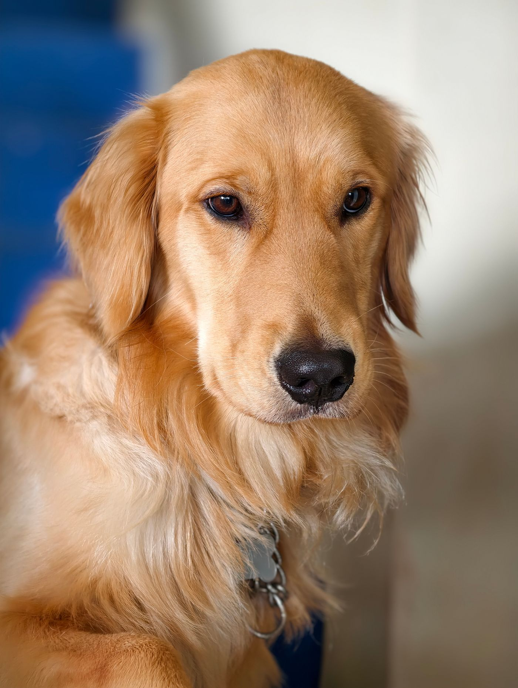
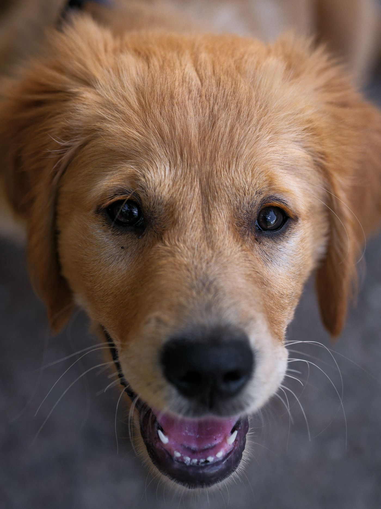
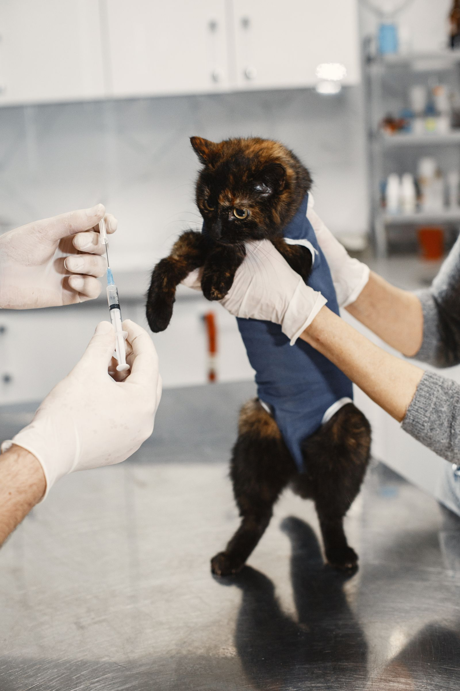
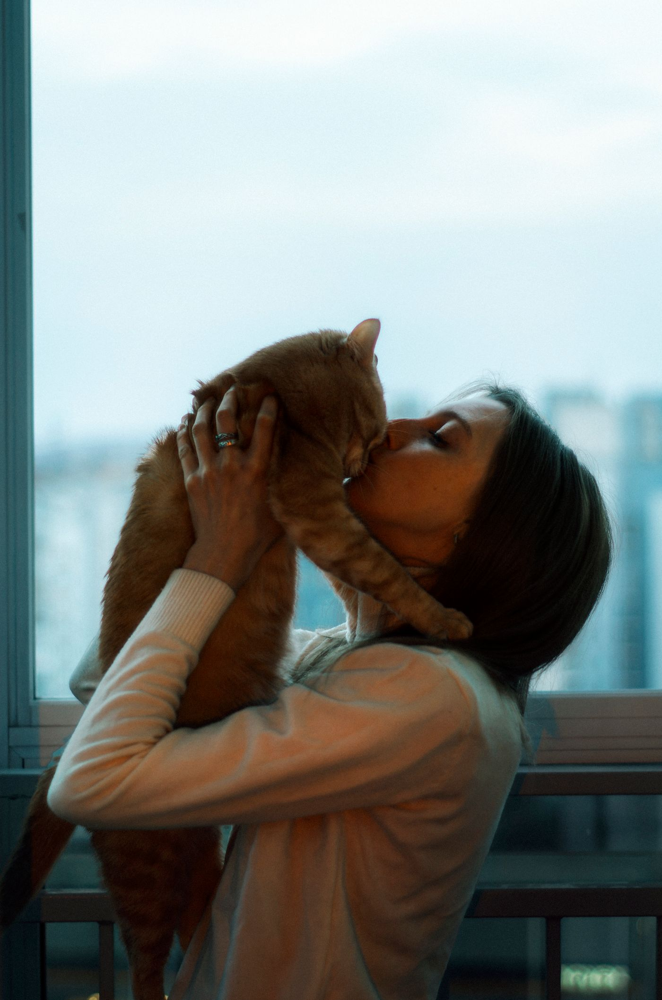

Weterynarz, który ma czas dla Twojego pupila.
Gabinet lek. wet. Katarzyny Przewoskiej-Stoltmann. Psy i koty, od pierwszego szczepienia po spokojną starość. Bez pośpiechu, bez stresu, z jasnym planem leczenia.
- Psy i koty
- Wizyty po umówieniu
- Paszporty i czipy

Usługi
Wszystko, czego potrzebuje Twój zwierzak
Od szczeniaka i kociaka po seniora. Profilaktyka, leczenie i formalności w jednym miejscu, blisko domu.
-
 Najczęściej wybierane
Najczęściej wybierane
Konsultacje i badania
Dokładne badanie ogólne, porada przy niepokojących objawach, kontrola po leczeniu. Wyjaśniamy wszystko prostym językiem.
-
Szczepienia i odrobaczanie
Kalendarz szczepień, wścieklizna, ochrona przed pasożytami.
-
Czipowanie i paszporty
Czip, rejestracja i paszport na wyjazdy z pupilem.
-

Szczeniaki i kocięta
Pierwsza wizyta, szczepienia i dobry start.
-
Diagnostyka
Badania krwi i moczu, skóra, uszy, układ pokarmowy.
-
Zabiegi i opieka nad seniorem
Kastracja i sterylizacja, drobne zabiegi, opatrywanie ran. Regularne przeglądy dla starszych psów i kotów.
-

Delikatnie i bez stresu
Spokojne tempo i łagodne podejście, także do lękliwych zwierząt.

Dlaczego my
Traktujemy go jak członka rodziny. Bo nim jest.
„Najważniejsze jest dla mnie to, żeby zwierzak wyszedł zaopiekowany, a właściciel spokojny i z jasną informacją, co dalej.”
- Czas na każdą wizytęPrzyjmujemy po umówieniu, więc nie czekasz w kolejce, a badanie nie odbywa się w biegu.
- Jasne wyjaśnieniaMówimy, co dolega pupilowi, jakie są opcje i ile kosztują, zanim cokolwiek zrobimy.
- Blisko domuKameralny gabinet w Gdyni przy ul. Górnej, wygodny dojazd z całego Trójmiasta.
Pierwsza wizyta
Prosto, w 3 krokach
Pierwszy raz u nas? Tak to wygląda.
- 1
Umawiasz termin
Dzwonisz albo zostawiasz wiadomość w formularzu. Oddzwonimy i dobierzemy godzinę.
- 2
Spokojne badanie
Rozmawiamy o objawach i nawykach, potem dokładnie badamy pupila, w jego tempie.
- 3
Plan i zalecenia
Dostajesz diagnozę, plan leczenia i zalecenia. Wiesz, co dalej i kiedy kontrola.
Lekarz weterynarii
Katarzyna Przewoska-Stoltmann
Prowadzę gabinet w Gdyni, w którym każdy pacjent jest traktowany indywidualnie. Wiem, jak ważny jest dla Ciebie Twój pies czy kot. Dlatego stawiam na spokojną atmosferę, dokładne badanie i rozmowę, po której wszystko jest jasne.
- Psy
- Koty
- Profilaktyka
- Szczepienia
- Opieka nad seniorem
Pytania
Zanim zadzwonisz
Najczęściej zadawane pytania. Nie ma tu Twojego? Napisz lub zadzwoń.
Gdzie znajdę weterynarza w Gdyni?
Gabinet Weterynaryjny lek. wet. Katarzyny Przewoskiej-Stoltmann mieści się w Gdyni przy ul. Górnej. Przyjmujemy psy i koty: konsultacje, szczepienia, czipowanie, diagnostyka i zabiegi.
Czy trzeba się wcześniej umówić?
Tak, przyjmujemy po wcześniejszym umówieniu. Dzięki temu nie czekasz w poczekalni, a my mamy czas na spokojne badanie. Zadzwoń albo wypełnij formularz.
Kiedy zaszczepić szczeniaka lub kociaka?
Pierwsze szczepienia wykonuje się zwykle w wieku kilku tygodni, a potem według kalendarza. Na pierwszej wizycie ustalimy plan dopasowany do Twojego zwierzaka.
Co zabrać na pierwszą wizytę?
Książeczkę zdrowia lub paszport, wyniki wcześniejszych badań i listę podawanych leków. Kota najlepiej przywieźć w transporterze, psa na smyczy.
Czy wyrobicie paszport dla psa lub kota?
Tak. Wszczepiamy czip, rejestrujemy zwierzę i wydajemy paszport potrzebny do podróży za granicę.
Kontakt
Umów wizytę dla pupila
Zostaw wiadomość, a oddzwonimy, żeby ustalić termin. W pilnych sprawach najlepiej zadzwonić.
Formularz wizyty
Godziny przyjęć
Godziny przykładowe – do potwierdzenia